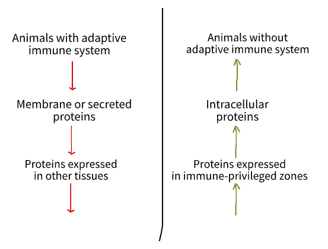

Public TCRs
Intro
T-cell receptors are highly diverse molecules. This diversity is achieved through a process of V(D)J recombinations. Since in each individual TCR generation happens independently, each individual has its own unique set of TCRs called TCR repertoire.
According to some estimates, there are 10^18^ or even 10^61^ possible TCR molecules. However, because of the negative and positive selection, diversity of TCRs in humans is limited to 10^15^ unique receptors. In one individual usually there are 10^6-7^ unique TCRs.
But, despite so high diversity, there are TCRs shared between multiple individuals. Such TCRs are called public in comparison with private TCRs found only in one individual.
Public TCRs are TCRs with high probability of generation due to some biases in gene selection during recombination or just more possibilities of rearrangement from given genes. The division into public and private TCRs is not strict, rather it is just a spectrum of publicity (==probability of recombination).
So the question is: why public TCRs exist?
Possible explanations and tests
- by chance probability of generation of some CDR3 sequences is higher than others
- public TCRs are specific against some common pathogens that humans encounter every day and because of that every person needs specific against these pathogens receptors in their repertoire
-
public TCRs provide "more general" protection:
- they are specific against epitopes frequently shared between different pathogens
- they obtain more broad specificity, i.e. are more cross-reactive
Horizontal gene transfer
Intro
Molecular mimicry is a sequence similarity between different species. Often molecular mimicry can lead to dangerous consequences, for example, development of the autoimmune disorder.
Sources of molecular mimicry: - by chance - proteins or motifs conserved in evolution - horizontal gene transfer
Horizontal gene transfer (HGT) is a the transfer of genetic material between more or less distantly related organisms, and thus stands in distinction to the standard vertical transmission of genes from parent to offspring.
HTG is a relatively rare event, but despite that it happened multiple times through the evolution of prokaryotic (often) and eukaryotic (seldom) organisms.
Can negative consequences of the molecular mimicry restrict the process of HTG in animals with adaptive immune system?
Hypotheses
If molecular mimicry truly can limit HTG, it means, that: - HTG would be less frequent in animals with adaptive immunity in comparison with other multicellular animals - HTG of membrane and secreted proteins would be less frequent than of intracellular (more hidden for the immune system) proteins - Proteins expressed in immune privileged zones would be more probable to arise due to HTG in comparison with proteins expressed in other tissues

Peptide pooling
Intro -- Combinatorial peptide pooling for TCR deorphanization
To identify TCR specificity, we need to test this TCR against multiple epitopes about which we suspect that some of them are recognized by this TCR. If we test each peptide individually, it can be a tedious and time-consuming process.
To accelerate this process, we can combine several peptides in different pools and then judging by the pattern of pools activation we can understand which peptide led to such pattern (which peptide was present in all activated pools).